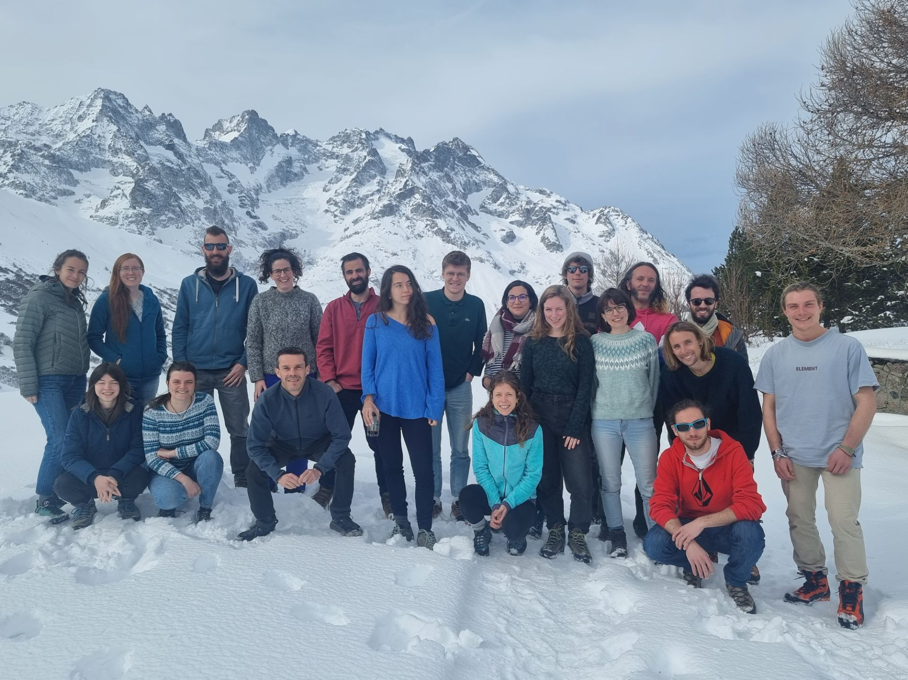
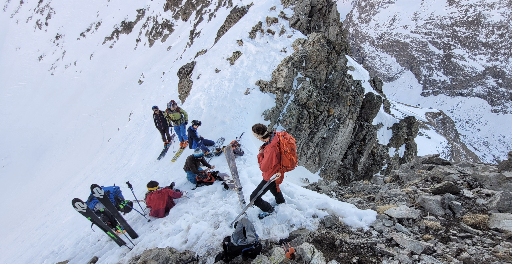

Current members
Postdocs
- 2024-2027 Selene Cerna - On the use of Earth observation foundation models to predict multispecies distributions. Funded through the MIAI Grenoble project and the now the OBSGESSION project. Co-advised with S. Si-Moussi
- 2026 Gabrielle Deschamps - Towards integrated models of plant species distributions and communities
- 2024-2027 Joaquim Estopinan - Detection and attribution of biodiversity changes through AI. Funded by the OBSGESSION project
- 2020-2028 Pierre Gaüzère - Measuring and explaining the global debt of biotic homogenization in a changing world. Funded by the FutureWeb project, the Marie Skłodowska-Curie Actions (MSCA) project INDEPBT and now the OFB-funded ADONIS project
- 2026 Romain Goury Temporal food-web dynamics along glacier retreat. Funded by the Bioiversa project IceCommunties
- 2023-2027 Marie-Caroline Prima - Building a coherent, resilient and connected protected area network in France. In the frame of the NaturaConnect project and now funed by the OFB-funded AlpiConnect project
- 2026 Matthias Rohr - Inferring asymmetric plant–plant interactions to characterize habitat structure and species roles. Funded by the ANR Reframe
PhD students
- 2023-2026 Marianne Tzivanopoulos - Understanding and predicting invertebrate diversity in Europe - model developpement and scenarios. Co-sup: Tamara Münkemüller and Laure Gallien. Funded by the NaturaConnect project
- 2024-2027 Eléonore Chenevois - Measuring, monitoring and conservation of terrestrial biodiversity on a national scale: a multi-taxonomic and fonctionnal approach. Co-sup: Cyrille Violle (CEFE-Montpellier). Funded by IPEF.
- 2025-2028 Maxime Hoareau - Integrating dispersal and explicit biotic interactions to understand and predict interaction networks response to environmental change. Co-sup: Cloviz Galiez (LJK-Grenoble) & Sara Si-Moussi (LECA-Grenoble). Funded by the ENS
- 2026-2029 Nicolas Fermon - Causal and Predictive Approaches to Biodiversity Dynamics. Co-sup: Sara Si-Moussi (LECA-Grenoble). Funded by the ENS
- 2026-2029 Marie-Moea Geffard Lemaitre - Development of Multi-Scale Nested Species Distribution Models and Their Application to Pollinators. Co-sup: Sara Si-Moussi (LECA-Grenoble). Funded by Polytechnique (X)
Research assistants & engineers
- 2010-onward Julien Renaud – GIS engineer - Database manager (CNRS IE)
- 2014-onward Maya Gueguen - Computer Scientist - Development of FATE-H, data analyses, statistical developments (UGA IE)
- 2015-onward Amélie Saillard - Technical coordinator of ORCHAMP - field assistant (UGA IE)
- 2025-2027 Giovanni Poggiato - Orchamp field manager and EBV producer (CNRS IR)
- 2025-2028 Floren Veillon - Database and GIS developer (CNRS IE)
Alumni
Postdocs
- 2006-2008 Sophie Rickebusch – "Impacts of climate and land use change on tree dynamics in France – a spatially and temporally explicit approach" funded by ANR QDiv
- 2007 Patrick Saccone– "Tree recruitement variation along a complex environmental gradient" funded by FP5 MACIS project
- 2008-2009 Francesco de Bello – "Spatial patterns of functional diversity in the French Alps" funded by ANR DIVERSITALP
- 2008-2009 Linda Beaumont – "Where will species go? Incorporating new advances in climate modelling into projections of species distributions"
- 2010-2010 Cécile Albert – "Functional traits, demography and environmental variations" funded by ANR 3Worlds
- 2011-2013 Cécile Albert - "Vegetation dynamics and ecosystem services provision in a fragmented landscape in response to global change" funded by FP7 Marie Curie Out-going fellowship (‘DIVERSE’)
- 2013-2015 Rafaël Wüest - "Coexistence and the Evolution of Climate Niches and Functional Traits", funded by the SNF (Switzerland) and the ERC TEEMBIO (2014-2015)
- 2017 Bradley Z. Carlson - Application of high‐resolution imagery to investigate the impacts of global change on the Mont Blanc massif. Co-sup: Anne Delestrated. Funded by the European project TourScience.
- 2013-2017 Marta Carboni - "Invasive Alien Species: towards Improved MOdeling tools through Virtual ecology" funded by FP7 Marie Curie fellowship (‘IASIMOV’) and the Biodiversa WhoIsNext project.
- 2015-2018 Matthew Talluto - "Bayesian modeling of community distributions" funded by the ANR Odyssee.
- 2018 Vicente Garcia-Navas - Diversity dynamics in French land bird communities: quantifying the multiple dimensions of biodiversity from a multifaceted approach. Funded by MOPGA (short stay)
- 2015-2019 Laura J. Pollock - "Conserving the Legacy of Evolution into the Future" funded by the ERC TEEMBIO and H2020 Marie Curie Fellowship (CLEF)
- 2018-2019 Gisele Winck - Consequences of environmental changes on mutualistic interactions. Funded by the CNPq (Brazil).
- 2017-2020 Marta de Barba - "Functional connectivity and ecological sustainability of European ecological networks: a case study with the brown bear" funded by Biodiversa BearConnect project.
- 2017-2021 Philipp Brun - Analyzing relationships and scale effects in diversity facets of the alpine flora. Based at WSL Zurich with Niklaus Zimmermann. Funded by the ANR-SNF OriginAlps project.
- 2019-2021 Christophe Botella - Graph embeddings to compare ecological networks. Funded by the ANR EcoNet project. In collaboration with Vincent Miele & Stéphane Dray (LBBE, Lyon) and Catherine Matias (Sorbonne Univ., Paris). Funded by the ANR EcoNet.
- 2020-2022 Gemma Rutten - Spatial biogeography of microbes and their interactions across the French Alps. Funded by the FutureWeb project.
- 2021-2022 Camille Martinez-Almoyna - Plant functional effects on the spatial structure of invertebrate communities 2021-2023 Marc Ohlmann (deceased on 17 June 2023) - Nativating the methods to study ecological networks
- 2023 Giovanni Poggiato - Integrating trophic networks in biodiversity modelling. Funded by the NaturaConnect project
- 2023 Camille Desjonquères - Understanding acoustic landscape along elevational gradients. Funded by the Marie Skłodowska-Curie Actions (MSCA) project SOUNDSCAPE
- 2022-2023 Rémi Patin - Biodiversity modelling using biomod2 and FATE-HD. Funded by the FeedBacks project
- 2023-2024 Yuqing Hu - Deep learning approaches for predictive ecology. Funded by the FeedBacks project
- 2019-2024 Nicolas Le Guillarme - Developping new AI tools for biodiversity data integration and modelling. Funded through the MIAI Grenoble project
- 2023-2025 Anne Thomas - Dynamic responses of European mountain vegetation to nature future framework scenarios. Funded by the NaturaConnect project
- 2024-2026 Miriam Beck - Biodiversity changes in Metropolitant France - tests of methods and attribution. Funded by the IMPACTS CESAB working group
PhDs
- 2006-2009 Cécile Albert - “Plant functional variations and convergences along environmental gradients in the Alps – predictions and prospectives in a global change context “. Univ. J. Fourier, Grenoble, France. Co-sup: Sandra Lavorel. Funded by a Polytechnique bursary
- 2007-2010 Greg O. Hughes - “Advancing Habitat Suitability Modelling Approaches For Use In Climate Change Impact Assessment and Species Conservation". Univ. of Cape Town, South Africa. Co-sup: Guy Midgley (SANBI) & Bruce Hewitson (UCT)
- 2008-2011 Morgane Barbet-Massin - Predict the potential impacts of climate change on the distribution and diversity of European birds. Université Pierre and Marie Curie, France. Sup. Fred Jiguet
- 2008-2012 Isabelle Boulangeat - Vulnerability ofmountainous ecosystems to global change - a spatially explicit modeling approach and conservation implications, Univ. of Grenoble, France. Funded by the FP6 Ecochange project.
- 2009-2013 Laure Gallien - How invasives get high - Understanding and predicting the geographical spread of invasive plants in alpine environments. Univ. of Grenoble, France. Co-sup: Sébastien Lavergne. Funded by the Ministery of Research.
- 2010-2013 Florian Boucher - Evolutionary response and species range change of Alpine plants in a climate change context. Univ. of Grenoble, France. Co-sup: Sébastien Lavergne. Funded by the Ministery of Research (Polytechnique).
- 2010-2014 Laure Zupan - Suitability of European protected areas in respect to evolutionary history and ecosystem functions. Univ. of Grenoble, France. Co-sup: Mar Cabeza (Univ. Helsinki). Funded by the ANR SCION project.
- 2012-2015 Loïc Chalmandrier - From communities to multi-trophic metacommunities: disentangling the features of diversity patterns. Co-sup: Sébastien Lavergne and Tamara Münkemüller. Funded by the ENS Paris.
- 2011-2015 Laüra Meller - Strategies to make spatial conservation prioritization less susceptible to uncertainty. Univ. of Helsinki, Finland. Co-sup: Mar Cabeza (Helsinki, Finland).
- 2012-2015 Florent Mazel - Understanding and protecting vertebrate diversity worldwide. Co-sup: Sébastien Lavergne. Funded by the ENS Lyon.
- 2013-2016 Bradley Z. Carlson - Species and Community Distribution Modelling in high elevation landscapes: application of high‐resolution imagery. Co-sup: Philippe Choler. Funded by the Ministery of Research
- 2014-2017 Ceres Barros - Study of ecosystem stability across spatial and trophic scales. Co-Sup: Tamara Münkemüller. Funded by the ERC TEEMBIO project.
- 2015-2018 João Braga - Studying the spatial diversity of ecological networks and their conservation implications. Co-sup: Stéphane Dray. Funded by the ARC Environnement 2014.
- 2016-2019 Marc Ohlmann - Toward a spatial theory of interaction networks in Ecology: concepts, methods and applications. Funded by the Ministry of Research
- 2017-2020 Sara Si-Moussi - Contribution of data mining to ecological communities modelling. co-sup: Mickael Hedde (Eco & Sol, INRA), Esther Galbrun (INRIA). Funded by the INRA-INRIA fellowship.
- 2017-2021 Camille Martinez-Almoyna - Plant-soil associations along environmental gradients: From trophic groups to multi-functionality. Co-sup: Tamara Münkemüller. Funded by the Ministry of Research
- 2017-2021 Yohann Chauvier - Developing multi-facetted approaches to plant conservation planning in the European Alps. Co-sup: Niklaus Zimmermann (WSL, Zurich). Funded by the ANR-SNF OriginAlps project.
- 2018-2022 Irene Calderón-Sanou - Towards a better understanding of soil multi- trophic biodiversity through the use of environmental DNA metabarcoding. Co-sup: Tamara Münkemüller. Funded by the ANR GlobNets
- 2019-2022 Billur Bektaş - Transient dynamics of Alpine grasslands – linking biodiversity and ecosystem functions in a warming world. Co-sup: Tamara Münkemüller. Funded by the Ministry of Research
- 2019-2022 Louise O'Connor - Predicting and anticipating global change effects on large-scale ecological networks. Co-sup: Laura J. Pollock (McGill Univ., Canada).
- 2019-2022 Emmanuel Faure - Rewilding of the Alps - a modeling and socio-economic perspective. Sup: Sandra Lavorel (LECA, Grenoble) and Harold Levrel (CIRED, Paris). Funded by the IPEF.
- 2019-2023 Giovanni Poggiato - Integrating ecological dependencies in biodiversity models. Co-sup: Julyan Arbel (INRIA, Grenoble). Funded by the ANR Gambas project
- 2019-2023 Daria Bystrova - Dimension reduction in Joint Species Distribution Models and Density estimation. Co-sup: Julyan Arbel (INRIA, Grenoble). Funded by the Ministry of Research
- 2021-2025 Gabrielle Deschamp - Towards integrated models of plant species distributions and communities. Funded by the Ministry of Research. Co-sup. Clovis Galiez (LJK-Grenoble).
- 2023-2026 Matthias Rohr - Study of plant communities,Integrating spatial scales to identify community assembly processes. Co-sup: Tamara Münkemüller. Funded by the ANR project PEG2
- 2023-2026 Romain Goury - Detection and attribution of changes in the spatio-temporal distribution of vegetation to improve our understanding of the dynamics at play in mountain ecosystems. Co-sup: Tamara Münkemüller. Funded by the Biodiversa project Prioritice
Research assistants & engineers
- 2007-2009 Claire Lagaye – GIS engineer - Database manager
- 2007-2010 Bruno Lafourcade – Computer Scientist - Work on BIOMOD
- 2010-2011 Samuel Pironon – Research Assistant - Impacts of climate change on diseases
- 2012-2013 Mathieu Faure - Functional trait measurements
- 2013 Amélie Saillard - Functional trait measurements
- 2010-2014 Damien Georges – Computer Scientist - Development of FATE-H / BIOMOVE / BIOMOD
- 2016-2017 Damien Georges – Computer Scientist - Development of BIOMOD
- 2010-2016 Marti Boleda – Molecular ecologist - PCRs
- 2017-2018 Baptiste Lemaire - Field assistant on observatory networks (Orchamp, GlacioCLIM). Funded by the CDP Trajectories.
- 2017-2020 Louise Boulangeat - Field assistant, trait sampling and lab work. Member of the Origin-Alps project.
- 2018-2023 Clément Lionnet - Bioinformatics - Environmental DNA analyses. Member of the GlobNet project.
- 2022-2024 Choé Mahieu - Commmunication officer and project manager of Orchamp
- 2023-2025 Hélène Blancheteau - Development and maintenance of biomod2 (CNRS IE)
Master students
- 2006 Cécile Albert - “Dynamique de colonisation des ligneux dans les prairies subalpines : application à Larix decidua“. Ecole polytechnique - INAPG, Paris. Co-sup: Sandra Lavorel
- 2006-2007 Darren Houniet – "Past, current and potential future distributions of the Dwarf Chameleons (Bradypodion) of South Africa." Univ. of Cape Town, South Africa. Co-sup: Kristal Tolley & Les Hunderhill
- 2007 Bruno Lafourcade - “Accounting for uncertainties in climate change projections“. Univ. of Toulouse, France
- 2008 Isabelle Boulangeat - Plant community structure of the French Alps - specialist versus generalist species, Univ. of Grenoble, France
- 2009 Laure Gallien - Relationships between exogenous and indigenous species at various spatial scales, Univ. of Grenoble, France.
- 2009 Clément Quétel - Sampling of the Alpine Flora, Univ. of Lille, France.
- 2010 Laure Zupan - Reserve selection in the French Alps in a climate and land use change context. Univ. of Grenoble, France
- 2010 Florian Boucher - Evolutionary history of alpine flora - niche, traits and species diversification. A case study with the Androsace genus. Ecole polytechnique - INAPG, Paris. Co-sup: Sébastien Lavergne.
- 2010 Samuel Pironon - Impacts of climate change on keystone species in France. Univ. of Metz.
- 2011 Pauline Philippe - Modeling vegetation dynamics in the Alps. ENS - Lyon / Univ. of Grenoble. Co-sup: I. Boulangeat.
- 2011 Loic Chalmandrier - Inferring mechanisms of community assembly through community phylogenetics. ENS - INAPG, Paris. Co-sup: T. Münkemüller & S. Lavergne.
- 2011 Florent Mazel - Integrating community phylogenetics into species distribution models. ENS - Lyon. Co-sup: Laure Gallien
- 2012 Florent Mazel - Species, phylogenetic and functional area relationships. ENS - Lyon.
- 2013 Sarah Duchazaubeneix - Environmental drivers of multiple facets of European biodiversity. Co-Sup: Laure Zupan.
- 2013 Bradley Z. Carlson - Dynamic habitat filtering of species distribution models in the Chamonix Valley, France. Univ. Grenoble. Co-Sup: Phillipe Choler.
- 2013 Alexandre Génin - Functional and phylogenetic turnover across space and millenia. ENS-Lyon. Co-Sup: Loïc Chalmandrier.
- 2014 Solène Knipping - Applying multi-facetted diversity-area relationships to understand plant invasion in islands. ENS-Lyon. Co-Sup: Florent Mazel & Hannah Marx.
- 2015 João Braga - Integrating phylogeny and space in the study of traits - environment relationships. Univ. of Grenoble. Co-sup. Stéphane Dray (LBEE, Lyon)
- 2015 Solène Knipping - How does productivity relates to functional and phylogenetic diversity over space? ENS-Lyon.
- 2016 Marc Olhmann - Déterminants de la structure spatiale des réseaux de co-occurrence plantes-champignons-bactéries dans les prairies subalpines. Ecole Polytechnique - Master EBE - Paris.
- 2017 Paul Dufour - Contexte biogeo-climatique de l'évolution de la migration chez les oiseaux. Univ. of Montpellier. Co-sup. Sébastien Lavergne.
- 2017 Lily Dunyach - Conservation of phylogenetic and functional diversity of the Alps. Univ. Grenoble-Alpes. Co.sup. Laura J. Pollock.
- 2017 Camille Martinez-Almoyna - Effects of multi-trophic assemblages on ecosystem multi-functionality. Univ. of Montpellier. Co-sup. Tamara Münkemüller.
- 2018 Irene Calderon-Sanou - “How sensitive are ecological analyses from environmental DNA to molecular and bioinformatic pipelines?". Univ. of Montpellier.
- 2019 Louise O'Connor - Protecting the European trophic network of vertebrates. Master 2 Biodiversité et evolution, Sorbonne Univ. Co-sup: L.J. Pollock 2019 Billur Bektaş - Simulating plant vegetation dynamics and confronting to experimental data. Master 2 BEE, Univ. Grenoble Alpes. Co-sup: T. Münkemüller
- 2019 Sarah Weil - The impact of soil microbial activity on plant diversity along Alpine elevational gradients. Master 2 Sciences de l'environnement, Dijon. Co-sup: T. Münkemüller
- 2019 Daria Bystrova - Joint Species Distribution Models: Review and Methodological development. Master of Science in Industrial and Applied Mathematics. Co-sup: Julyan Arbel (INRIA)
- 2019 Giovanni Poggiato - Joint Species Distribution Models: dissecting their mathematical properties and future prospects. Master Politecnico di Milano. Co-sup: Julyan Arbel (INRIA)
- 2020 Lucas Batier - Detecting mowing and grazing across the Alps from high-resolution satellite imageries and artificial intelligence. ENSIMAG - Grenoble. Chair MIAI-RS. Co-sup: Sara Si-Moussi (LECA)
- 2020 Guillaume Delaitre - Multi-trophic responses to environmental drivers around the world. Univ. of Montpellier.
- 2021 - Paul Thienpont - Disantangling soil metacommunities through space. ENS Lyon.
- 2021 - Gabrielle Deschamp - Contrasting trait-based modeling approaches on the alpine flora. Univ. Grenoble Alpes.
- 2021 - Jérémy Andréoletti - Building and testing multi-trophic species distribution models. Univ. Paris Saclay - ENS Paris - Polytechnique.
- 2022 Yoann Cartier - Using Artificial Intelligence to predict EUNIS habitat classes in space and time. Funded by the ESA funded project E04DIVERSITY (ENSIMAG student). Co-sup: Sara Si-Moussi (LECA)
- 2022 Elias Chetouane - An semi-automatic pipeline to gather, clean and annotate camera-trap pictures from the Orchamp program . Main supervisor: Vincent Miele (LBBE, Lyon).
- 2021-2022 Choé Mahieu - Harnessing and disseminating Orchamp data and protocoles. (IBGE Montpellier)
- 2022 Hichem Saghrouni - Species invasive modelling through deep-learning. master Mathématiques Vision Apprentissage (MVA), ENS Paris-Saclay. Co-sup: Sara Si-Moussi (LECA)
- 2023 Romain Goury - Understanding earthworm effects on soil biodiversity and functioning. Co-Sup: T. Münkemüller.
- 2024 Maxime Hoareau - Impacts of trophic interactions on species distributions. ENS Lyon, Co-sup: Sara Si-Moussi (LECA)
- 2024 Lucia Oliveira - Landscape connectivity for invertebratres in France. Master Rennes. Co-sup. Marie-Caroline Prima
- 2024 Matteo Schweizer - Structure and phenology of vertebrate assemblages in the French Alps. Co-sup. Amélie Saillard & Vincent Miele 2025 Maxime Hoareau A Bayesian framework to spatially constrain habitat suitability maps from species distribution models. ENS Lyon
- 2025 Lise Layotte - Uncertainty and comparative analyses of multi-species connectivity. Master Montpellier GAIA. Co-sup. Marie-Caroline Prima
Honours & bachelor students
- 2004 Adeline Fayolle - “Variation of morphological and reproductive traits of Protea species along bioclimatic gradients”, ENSA-Montpellier, France
- 2007 Alex Soudant - “Traits de graines et variation inter- et intra spécifique le long d’un gradient environnemental complexe”, Univ. of Bordeaux, France, Co-sup: Cécile Albert
- 2007 Emmanuel Dortel - “Modélisation de la réponse des populations d'insectes aux changements globaux : comparaison des effets d'une augmentation de la température et d'une modification d'usage des terres sur les coléoptères scarabéides coprophages”, Univ. of Montpellier, France, Co-sup: Pierre Jay-Robert (CEFE, Montpellier)
- 2008 Florent Mazel - Spatial variation of alpha and beta functional diversity along an altitudinal gradient, ENS Lyon, France
- 2008 Florian Boucher - Réponse de la végétation aux changements climatiques et aux changements d’utilisation des terres dans la vallée de la Guisane (05): paramétrage et test de sensibilité d’un modèlede paysage (LAMOS). Ecole Polytechnique, promotion X2005. Co-sup: Cécile Albert.
- 2009 Coline Byczek - Eléments de validation de l'utilisation de la technique de remote sensing pour l'évaluation de la biodiversité végétale des prairies alpines, ENS Lyon, France
- 2009 Steve Prate - Multiple realized niche of invasive species worldwide. Entente Franco-Québécoise
- 2010 Pierre Alain Sachiet - A comprehensive test of the MAXENT model (Shipley et al. 2001 Science) on the Alpine Flora. Ecole Polytechnique. Co-sup. Cécile Albert.
- 2012 Kira Buelhoff - A comprehensive functional trais database for European vertebrates. Erasmus - Rurh-Universität Bochum (Germany).
- 2013 Maya Guéguen - Impacts of climat and land use change on multiple facets of Alpine biodiversity - INSA Lyon. Co-Sup: Damien Georges
- 2014 Laura Vecera - Climatic niche evolution of Phyteuma. Co-Sup: Cristina Roquet & Sébastien Lavergne.
- 2015 Marc Olhmann - Construction et analyse de réseaux de co occurrence partielle à partir de données de metabarcoding collectées le long d'un gradient environnemental à Valloire (Alpes françaises). Ecole Polytechnique. Co-sup: Loïc Chalmandrier & Sebastien Lavergne
- 2015-2016 Marvin Plein - Simulating vegetation dynamics in the Mont Blanc area. Univ of Freiburg (Germany).
- 2016 Giovanni Poggiato - Towards a spatially-explicit model of plant dynamlics and herbivores. Centrale Lyon.
- 2017 Giovanni Poggiato - Bayesian networks to detect multi-trophic interactions. Centrale Lyon. Co-sup: Marc Olhmann
- 2017 Irene Calderon - The role of traits, environment and species interactions for invasions. Stage Master I. Univ. of Montpellier. Co-sup: Marta Carboni & Laura Pollock
- 2017-2018 Louise O'Connor - Optimising the protection of trophic networks in Europe. ENS Paris (Césure)
- 2018 Mary Varoux - Defining zoogeographical regions based on multi-trophic interactions in Europe. Univ. of Montpellier 2018 Honour's student: Billur Bektaş - Plant functional grouping at an Alpine valley plant-soil feedbacks related traits. Excellence scholarship IDEX-UGA. Univ. Grenoble Alps. Co-sup: Tamara Münkemüller
- 2018 Ruth Stephan - Modelling species distributions in the Mont-Blanc area. Univ. of Freiburg (Germany)
- 2018 Floriane Fournier - Soil multi-trophic distance decays along an elevational gradient. ENS Lyon. Co-Sup: Florent Mazel (Univ. British Columbia) & Marc Ohlmann.
- 2020 Gabrielle Deschamp - Trait-based modelling as a tool to investigate ecosystem desequilibrium. Univ. Grenoble Alpes.
- 2020 Antoine Manteaux - Extending Essential Biodiversity Variables to environmental DNA measurements. Ecole Polytechnique Paris-Saclay.
- 2020-2021 Chloé Mahieu - Data analyses and scientific outreach of Orchamp.
- 2021 - Servane Demarquet - Quantifying, mapping and protecting nature contributions to people from vertebrate data in Europe. Ecole Polytechnique Paris-Saclay
- 2021 - Zoé Pelta - Post-fire multi-trophic community construction. Ecole Polytechnique Paris-Saclay
- 2022 - Maxime Delprat - Modelling vegetation dynamics in the Mont Blanc area. M1 Modélisation des systèmes écologiues (Toulouse). Co-encadré avec Maya Guéguen
- 2022 - Elénore Chenevois - Mapping and protecting vertebrate diversity in Europe under current and future conditions. Ecole Polytechnique Paris-Saclay
- 2022 Mathieu Bianic - Comparaison de l'efficacité de plusieurs marqueurs pour retrouver la diversité des arthropodes dans les communautés d'Orchamp. DU Grenoble. Co-encadré avec Camille Martinez-Almoyna
- 2022-2023 Thomas Ominus - Evaluation of biotic homogenization in time and space. Main-Sup: P. Gaüzere.
- 2025 Mathieu Absolut De La Gastine — Do spatial plant associations change with climate warming. ENS Lyon. Co-sup. Tamara Munkemuller & Matthias Rohr.
- 2025-2026 Mathieu Absolut De La Gastine - From eDNA reads to trophic groups and food webs. ENS Lyon. Co-sup. Tamara Munkemuller
Visiting researchers
- Mr. Olivier Broennimann (PhD) (Univ. of Lausanne, Switzerland). Oct 2004- Janv 2005.
- Mr. Darren Houniet (Msc) (South African Biodiversity Institute, Cape Town, South Africa) Sep2006-Oct2006
- Ms. Sara Vallecillo (PhD) (Centre Tecnològic Forestal de Catalunya, Solsona, Spain) Nov2006-Dec2006
- Dr. Nuria Roura-Pascual (Univ. of Girona, Spain) Jan2007-Feb2007
- Dr. Linda Beaumont (Macquarie University NSW, Australia) March 2007
- Mr. Donald Midoko Iponga (PhD) (Centre for Invasion Biology, Stellenbosch, South Africa) Sept2007-Oct2007
- Ms. Nuria Gasso (PhD) (CSIC, Sevilla, Spain) Sept2007-Oct2007 / March 2008
- Dr. Colin Yates (CSIRO, Camberra, Australia) Feb 2008
- Dr. Danni Guo (SANBI, Cape Town, South Africa) Feb 2008
- Dr. Lydia Ries (Univ. Santa Barbara, USA) Feb 2008
- Ms. Laetitia Buisson (Univ. of Toulouse) Dec 2008
- Dr. Christine Meynard (Univ. of Montpellier) Dec 2008
- Ms. Marta Carboni (Univ. of Roma) Jan-March 2009 / Jan - March 2010
- Ms. Maria Trivino (CSIC, Madrid) Oct - Dec 2009 / Jan - June 2010
- Dr. Dominique Gravel (Univ. of Rimousky, Canada) March-April 2011
- Dr. Belinda Gallardo (Univ. of Cambridge, UK) July 2011
- Mr. Cory Merow (Univ. Connecticut, US) Oct 2011
- Ms. Heini Kujala (Univ. of Helsinki, Finland) Oct 2011
- Dr. Mihai Puscas (Cluj, Romania) March-June 2012
- Ms. Mireia Valle Tobar (Sukarrieta, Spain) March 2012
- Dr. Dominique Gravel (Univ. of Rimousky, Canada) Juin 2012
- Mr. Rafael Wüest (WSL, Zurich) Sept 2012
- Dr. Marc Cadotte (Univ. Toronto, Canada) Oct 2012
- Dr. Jonathan T. Davies (McGill Univ, Canada) Oct 2012
- Dr. Cécile Albert (McGill Univ, Canada) Oct 2012
- Dr. Niklaus Zimmermann (WSL, Zurich) Dec 2011
- Ms. Isabel Cabra Rivas (Univ. Alcala, Spain). Nov 2012 - Feb2013
- Dr. David Bourke (Univ. Dublin, Ireland) Jan 2013
- Dr. Niklaus Zimmermann (WSL, Zurich) Feb 2013
- Dr. Niklaus Zimmermann (WSL, Zurich) March 2013
- Dr. Pedro Peres-Neto (Univ. Quebec, Montréal, Canada) March 2013
- Dr. Cécile Albert (Univ. McGill, Canada) April 2013
- Dr. Frédéric Guillaume (ETH-Zurich), May 2013
- Dr. Jonathan T. Davies (McGill Univ, Canada) June 2013
- Dr. Heini Kujala (Melbourne University, Australia) July 2013
- Dr. Cérès Barros (Aberdeen Univ.) October 2013
- Dr. Justin Travis (Aberdeen Univ.) October 2013
- Ms. Julia Laube (Univ. of München) November-December 2013
- Dr. David Bourke (Univ. Dublin, Ireland) March-April 2014
- Dr. Jake Alexander (Univ. of Zurich, Switzerland) March 2014
- Dr. Niklaus Zimmermann (WSL, Zurich) May 2014
- Dr. Erin Cameron (Univ. Helsinky), May 2014
- Dr. Olivier Cotto (Univ. of Zurich), June 2014
- Dr. Dominique Gravel (Univ. Rimousky, Canada) June 2014
- Dr. Isabelle Boulangeat (Univ. Rimousky, Canada) June 2014
- Dr. Beth Crase (National University of Singapore) July 2014
- Dr. Brendan Wintle (Univ. of Melbourne) Nov 2014
- Dr. Nathan Kraft (Univ. of California). June 2015.
- Dr. Damaris Zurell (WSL, Zurich) June 2015.
- Dr. Ariana Kubartova (Univ. Upsalla) June 2015
- Dr. Nathalie Jane Brisco (Univ. of Melbourne) July 2015
- Dr. Reid Tingley (Univ. of Melbourne) July 2015
- Ms. Freya Thomas (Univ. of Melbourne) July-August 2015
- Dr. Luca Santini (Iniv. of Roma) April - August 2016
- Dr. Karel Mokany (Univ. of Melbourne) May - July 2016
- Ms. Idaline Laigle (Univ. of Rimousky) Nov 2016
- Dr. Ulrich Brose (iDIV, Germany) May 2017
- Dr. Santiago Solliveres (Univ of Bern) May 2017
- M. Christophe Boletta (Univ. of Montpellier) June 2017
- Dr. Ceres Barros (Pacific Forestry Centre, Victoria), Dec 2017
- Dr. Pablo Lucas (Univ. of Krakova) Nov 2017 - March 2018
- Prof. James Clark (Dukes Univ) Dec 2018
- Dr. Nicolas Loiseau (Univ. Montpellier II, MARBEC-CEFE) March 2019
- Dr. Isaac Paterson (Helsinki) April 2019
- Mr. Ian Ondo (Kew Garden) April 2019
- Dr. Samuel Pironon (Kew Garden) April 2019
- Dr. Darren Southwell (QAECO, Melbourne) June 2019
- Dr. Isaac Peterson (FMNH, Helsinki) June 2019
- Pr. Mariana Vale (Universidade Federal do Rio de Janeiro, Brazil) March 2021-March 2022
- Pr. Marcio Argollo de Menezes (Universidade Federal Fluminense, Brazil) March 2021-March 2022
- Simone Giachello (Universite de Milano, Italy) Oct 2022-Jan 2023
- Chiara Dragonetti (Sapienza University, Roma, Italy) Jan 2023-May 2023